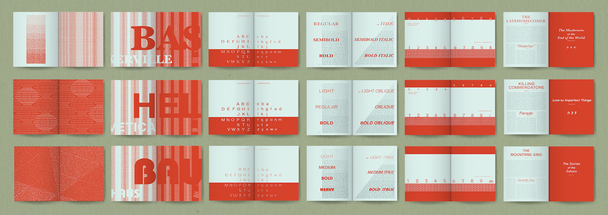
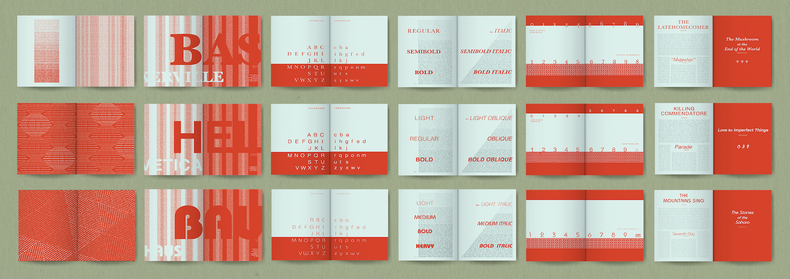

Type Specimen Book: "Textures"
This book explores three typefaces and their various weights, size, numbers, and glyphs through the design and theme of "Textures."

Project Task
The task for this project was to create a Type Specimen Book that follows key guidelines supplemented
by the professor.
The guidelines included choosing three fonts and creating a unified design
that repeats in each chapter. The design must showcase various forms of the font and utilize basic
elements and principles of design.
Process
For my Type Specimen Book, I chose the theme "Texture." I would always draft my ideas on paper to loosely visualize my ideas while noticing problems and finding solutions.

Details
After learning about the color of type, I was fascinated by how paragraphs can create an illusion of a block of color. The different weights of the typeface can create an illusion of a lighter or darker palette which is somewhat similar to how printers use halftones to give an illusion of various color values. By utilizing this quality of type, I was able to create different textures and patterns to highlight the quality of the typeface while playfully decorating each chapter.

Results
The three chapters in this Typographic Specimen Book showcase the typographic elements of
Baskerville, Helvetica, and Bauhaus. The cover, endpaper spreads, and the title spread uses the
font Parisian to contrast from the other fonts while complimenting the chosen theme of
"textures."
Throughout this book, a cohesive design is achieved through the use of a
minimal color palette, organized flow of each chapter, and distinctive decorative element which
uses the color of type in varying ways.

 

This was my first Typography class and this Typographic Specimen Book was our final project. This project allowed me to utilize my fine arts background in playfully designing decorative elements while teaching me the intricate precision and balance that is unique to typography. I learned that I enjoy creating design elements that bridge between visual and practical organization.